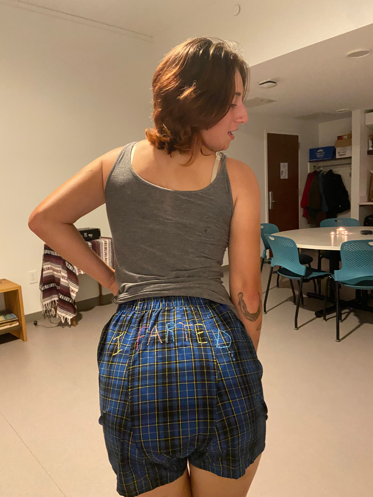
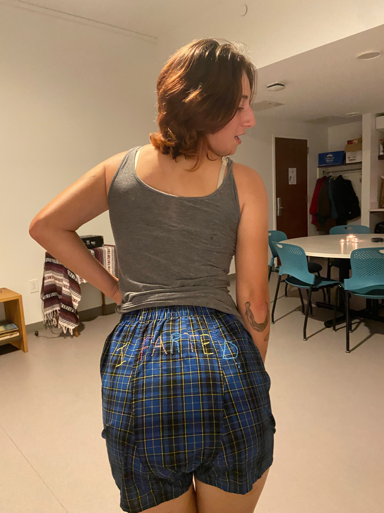
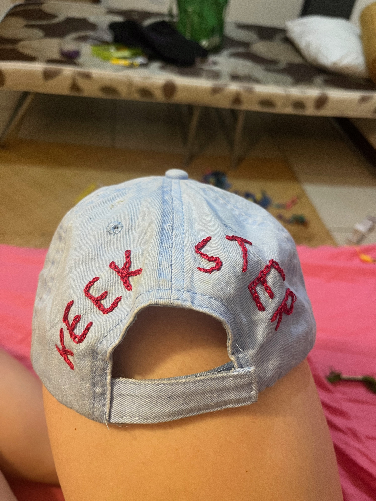
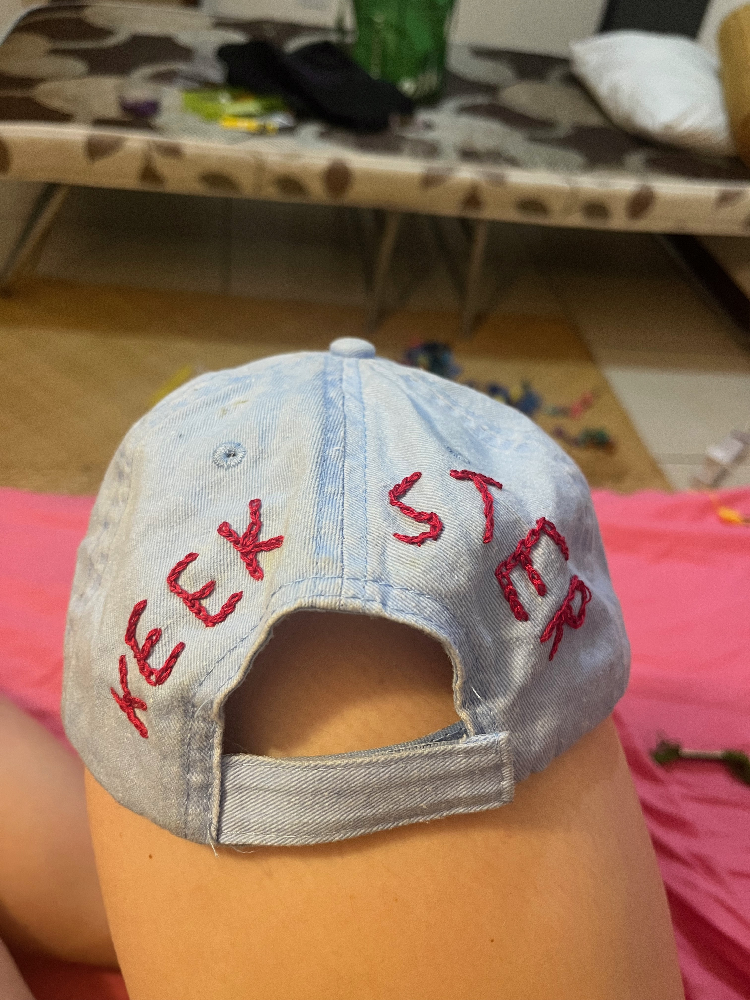

Daddy dearest is very supportive and I thought it would be a good gift to show him just how much I see him. He's lowkey a hater in a not problematic way so there's balance. Regular back stitching for all lettering.
hello welcome to my embroidery. This is where I showcase my talent and some very very happy customers. Click on the tabs to see some projects
Daddy dearest is very supportive and I thought it would be a good gift to show him just how much I see him. He's lowkey a hater in a not problematic way so there's balance. Regular back stitching for all lettering.


Made this bad boy for the Swarthmore Alpha. Like no one is Alpha like her. This is a quote verbatim from her. It's some life advice. The stiching is regular backstitch on the back and front. But the ALpha is a cross stitch pattern
 

Alex here loves to Fart. I've never met a person who is more gaseous than Alex. Like??? Make it make sense! SO in honor of that, and for her silly little 21st birthday, I cross- stitched I FARTED on some boxers.
YIKES!! imagine ... no bi hate in all seriousness. just a little jokey see how happy the bi bff is. like she's fine. So happy to be there. Regular backstitching for the lettering and then some flowers and then some hearts and stars. All for this star Madeline.
This one is another pro-lesbian statement. For a friend who only has white friends if they're lesbians.
some god is trans content looped together. The one that is pink-ish shirt is chain stich for the words 'God' and 'Trans'. The other ones are just regular backstich.


for my favorite kiki who is DJ KHALED's NUMBER ONE FAN. @djkhaled notice her!!

 

another one for kiki my beautiful love. It's a daisy with french knots at the center and satin stitch for the pedals


Randy is wonderful and deserves a hat with her esteem and perfect personality. here is a hat for randy. mostly simple backstitch for everything but I did some cross stitch for the loon

another randy gift bc i also bought her a shirt and she needed a whole fit from trel. I painted the words on fabric. dyed the pockets green and purple and and then embroidered the fabric on with a running stitch.

for Nat!! what a wonderful human and Alaskan!! It's a chain stitch for all the lettering baby
This one is for julia!! A rip off of marcus pork but that's okay Its anxious jewish lesbian fall sem and lets overthink and yearn!!! Simple backstich for all